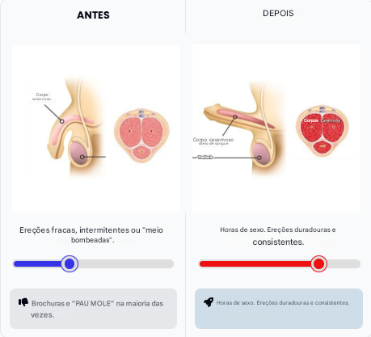
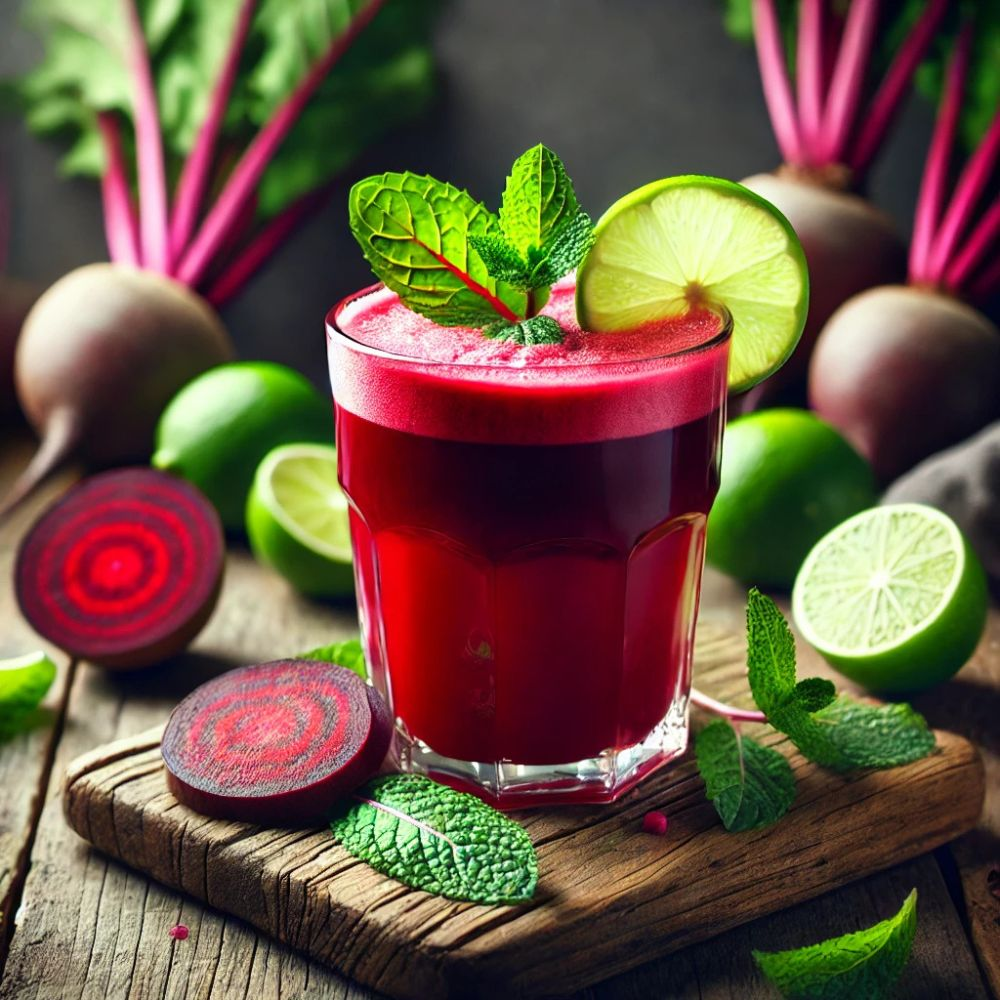
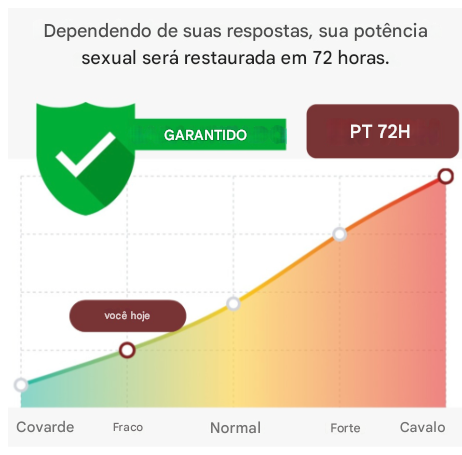

<!DOCTYPE html>
<html lang="pt-BR">
<head>
  <meta charset="UTF-8">
  <meta name="viewport" content="width=device-width, initial-scale=1.0">
  <title>Quiz Impotência</title>
  <style>
    body {
      font-family: Arial, sans-serif;
      background-color: #f8f8f8;
      margin: 0;
      padding: 0;
      display: flex;
      justify-content: center;
      align-items: start;
      min-height: 100vh;
    }
    .container {
      background: #fff;
      padding: 24px;
      border-radius: 12px;
      box-shadow: 0 0 20px rgba(0,0,0,0.05);
      max-width: 100%;
      width: 100%;
      margin: 16px;
      box-sizing: border-box;
    }
    h2 {
      margin-bottom: 20px;
      font-size: 1.25rem;
      text-align: center;
    }
    .option {
      display: block;
      width: 100%;
      padding: 14px;
      margin: 8px 0;
      background-color: #FF0000;
      color: white;
      border: none;
      border-radius: 8px;
      font-size: 1rem;
      cursor: pointer;
      transition: background-color 0.3s ease;
    }
    .option:hover {
      background-color: #FF0000;
    }
    .field {
      width: 100%;
      padding: 14px;
      margin-bottom: 12px;
      font-size: 1rem;
      border: 1px solid #ccc;
      border-radius: 6px;
      box-sizing: border-box;
    }
    .submit {
      background-color: #FF0000;
      color: white;
      padding: 14px;
      width: 100%;
      font-size: 1rem;
      border: none;
      border-radius: 8px;
      cursor: pointer;
    }
    .submit:hover {
      background-color: #FF0000;
    }
    img {
      max-width: 100%;
      height: auto;
      margin-bottom: 16px;
      border-radius: 10px;
    }
    @media (min-width: 480px) {
      .container {
        max-width: 440px;
      }
    }
  @keyframes fillProgress {
  0% { width: 0%; }
  100% { width: 60%; }
}
</style>
</head>
<body>
  <div id="quiz-container" class="container">
    <!-- Etapas serão inseridas aqui pelo JS -->
  </div>

  <script>
    const quizData = [
  {
    question: 'Esta fórmula é personalizada de acordo com sua idade, vamos preparar uma solução única... Escolha uma opção:',
    image: 'images/idade.png',
    options: ['18-25 Anos', '25-35 Anos', '35-45 Anos', '+45 Anos']
  },
  {
    question: 'Qual é seu peso aproximado (kg)?',
    image: 'images/peso.png',
    options: ['Menos de 70kg', 'Entre 70kg e 90kg', 'Entre 90kg a 110kg', 'Mais de 110kg']
  },
  {
    question: 'Você Fuma?',
    image: 'images/fumo.png',
    options: ['Sim,  todos dias', 'Sim, as vezes', 'Não, parei','Nunca fumei']
  },
  {
    question: 'Você bebe álcool?',
    image: 'images/bebida.png',
    options: ['Sim, frequentemente', 'Às vezes', 'Não, evito o maximo']
  },
  {
    question: 'Quantas vezes por semana você se exercita?',
    image: 'images/exercicios.png',
    options: ['Não faço exercicios', '1-3 vezes por semana', 'Todos os dias']
  },
  {
    question: 'Você tem algum problema de saúde diagnosticado, como diabetes, hipertensão ou colesterol alto?',
    image: 'images/doença.png',
    options: ['Sim, estou em tratamento', 'Não, sem nenhum problema']
  },
  {
    question: 'Você já tentou alguma solução para melhorar seu desempenho?',
    image: 'images/bebida.png',
    options: ['Nunca provei nada', 'Sim, ja provei alguns', 'Sim, mas sem resultados', 'Não, so tentei alguns exercicios']
  },
  {
    question: 'Que resultado deixaria você feliz com sua vida sexual?',
    image: 'images/felicidade.png',
    options: ['Durar muito na cama', 'Ter uma penis duro e grande', 'Ser mais confiante na cama']
  },
  {
    question: 'Se houvesse uma solução 100% natural, sem medicamentos ou efeitos colaterais, você estaria disposto a experimentá-la?',
    image: 'images/receita.png',
    options: ['Sim, quero esta solução', 'Não, sei depende do metodo', 'Talvez, estou curioso para saber']
  }
];

    const quizContainer = document.getElementById('quiz-container');
    let currentQuestion = 0;
    let answers = [];

    function showQuestion(index) {
  const q = quizData[index];
  quizContainer.innerHTML = `
    ${q.image ? `` : ''}
    <h2>${q.question}</h2>
    ${q.options.map(option => `<button class="option">${option}</button>`).join('')}
  `;

  document.querySelectorAll('.option').forEach(button => {
    button.addEventListener('click', () => {
      answers.push(button.innerText);
      currentQuestion++;

      if (currentQuestion === 6) {
      showProofPage(); // Depois dessa, o botão chama showTestimonialsPage()
      } else if (currentQuestion === 6.5) {
      showTestimonialsPage(); // Depois dessa, o botão chama showQuestion(currentQuestion)
      } else if (currentQuestion === 9) {
       showDoctorPage();
      } else if (currentQuestion === 9.5) {
      showVideoPage();
      } else if (currentQuestion === 10) {
      showBeetrootPage();
      } else if (currentQuestion === 10.5) {
      showFinalPlanPage()
      } else if (currentQuestion === quizData.length) {
      showOfferPage();
      } else if (currentQuestion < quizData.length) {
      showQuestion(currentQuestion);
    }
    });
  });
}

function showProofPage() {
  quizContainer.innerHTML = `
    <h2 style="text-align:center; font-size: 1.2rem;">Veja o que dizem nossos pacientes:</h2>

    <div style="text-align: center; margin-bottom: 20px;">
      <p style="margin: 8px 0; font-size: 0.9rem;">Seu resultado:</p>
      <svg width="120" height="120" viewBox="0 0 36 36">
        <g transform="rotate(-90 18 18)">
          <path
            fill="none"
            stroke="#eee"
            stroke-width="3"
            d="M18 2.0845
               a 15.9155 15.9155 0 0 1 0 31.831
               a 15.9155 15.9155 0 0 1 0 -31.831"
          />
          <path id="progress-circle"
            fill="none"
            stroke="#0074d9"
            stroke-width="3"
            stroke-dasharray="0, 100"
            d="M18 2.0845
               a 15.9155 15.9155 0 0 1 0 31.831
               a 15.9155 15.9155 0 0 1 0 -31.831"
          />
        </g>
        <text id="progress-text" x="18" y="20.35" font-size="5" text-anchor="middle" fill="#000">
          0%
        </text>
      </svg>
    </div>

    <p style="font-size: 0.95rem; text-align: justify; margin-bottom: 20px;">
      <strong>Você sabia?</strong><br>
      A partir dos 40 anos, <strong>mais de 70% dos homens</strong> enfrentam dificuldades para manter uma ereção firme.<br><br>
      A queda da <strong>testosterona</strong> reduz o desejo, gera insegurança e até vergonha na cama. As mulheres insatisfeitas procuram fora de casa o que não têm dentro do relacionamento. 
      <span style="color: red; font-weight: bold;">70% das traições têm origem na insatisfação sexual.</span>
    </p>

    

    <div style="background: #000; color: white; padding: 12px; border-radius: 10px; font-size: 0.95rem; margin-bottom: 20px;">
      <strong>⚠️ AVISO IMPORTANTE:</strong><br>
      Se você já falhou com sua parceira mais de uma vez, corre o risco de destruir sua relação e sua autoestima.
    </div>

    <button class="submit" style="background: red; font-weight: bold;" onclick="showTestimonialsPage()">CONTINUAR</button>
  `;

  // animação de progresso
  let progress = 0;
  const target = 15;
  const circle = document.getElementById("progress-circle");
  const text = document.getElementById("progress-text");

  function animate() {
    if (progress <= target) {
      circle.setAttribute("stroke-dasharray", `${progress}, 100`);
      text.textContent = `${progress}%`;
      progress++;
      requestAnimationFrame(animate);
    }
  }

  requestAnimationFrame(animate);
}

function showVideoPage() {
  quizContainer.innerHTML = `
    <h2 style="text-align: center; font-size: 0.95rem; font-weight: 500; margin-bottom: 16px;">
      «Veja o que diz Eduardo após conhecer a solução natural do Dr. Carlos...»
    </h2>

    <video controls autoplay playsinline muted style="width: 100%; border-radius: 12px; margin-bottom: 20px;">
      <source src="video/video-eduardo.mp4" type="video/mp4">
      Seu navegador não suporta vídeos HTML5.
    </video>

<button class="submit" onclick="currentQuestion = 10; showBeetrootPage()">Continuar</button>
  `;
}

function showFinalPlanPage() {
  quizContainer.innerHTML = `
    <p style="font-size: 1rem; font-weight: bold; text-align: center; margin-bottom: 8px;">
      Você não precisa de <span style="color: red;">Viagra</span> ou <span style="color: red;">Coelho</span> para manter uma ereção!
    </p>
    <p style="color: red; text-align: center; font-size: 0.9rem; margin-bottom: 16px;">Pode morrer usando essas porcarias.</p>

    <p style="font-size: 0.95rem; text-align: center; margin-bottom: 16px;">
      Já pensou como seria nunca mais passar vergonha na cama? <br>
      Com esta solução 100% NATURAL, você deixará de ser o tipo que falha e se tornará o homem que as mulheres nunca esquecem. <br>
      Com a <strong style="color: red;">receita PERSONALIZADA do Truque da Beterraba</strong> você terá ereções fortes e duradouras!
    </p>

    

    <p style="text-align: center; font-weight: 600; margin-bottom: 10px;">Veja seu plano:</p>

    <div style="background: #f2f2f2; padding: 10px 14px; border-radius: 10px; margin-bottom: 10px;">💪 <strong>Sua ereção</strong><br>Rígido e confiável</div>
    <div style="background: #f2f2f2; padding: 10px 14px; border-radius: 10px; margin-bottom: 10px;">⏰ <strong>Como utilizar</strong><br>1 copo ao dia pela manhã</div>
    <div style="background: #f2f2f2; padding: 10px 14px; border-radius: 10px; margin-bottom: 10px;">🥬 <strong>Ingredientes</strong><br>2 naturais</div>
    <div style="background: #f2f2f2; padding: 10px 14px; border-radius: 10px; margin-bottom: 10px;">🔥 <strong>Autoestima</strong><br>Confiante, dominante, desejado</div>
    <div style="background: #f2f2f2; padding: 10px 14px; border-radius: 10px; margin-bottom: 20px;">💥 <strong>Impacto na parceira</strong><br>Gemidos, sorrisos, satisfação</div>

    <p style="text-align: center; margin-bottom: 20px;"><strong>Você terá ereções como aos 20 anos!</strong><br><span style="font-size: 0.9rem;">Mais firme e sem falhas!</span></p>

    

    <div style="background: #f2f2f2; padding: 14px 16px; border-radius: 10px; margin-bottom: 20px;">
      <p>👍 <strong>Chega de ser chamado de lento, preguiçoso ou brochado</strong></p>
      <p>👍 Comece a impressionar de novo!</p>
      <p>👍 Mostre que ainda é um homem completo e poderoso</p>
    </div>

    <p style="text-align: center; margin-bottom: 16px;">
      Saia da condição de <strong>BROCHA</strong> e seja o homem que <strong>SUSTENTA EREÇÕES por mais de 30 MIN</strong> para satisfazer qualquer mulher!
    </p>

<button class="submit" style="background: red; font-weight: bold;" onclick="currentQuestion = quizData.length; showOfferPage()">ACESSAR MINHA RECEITA</button>
  `;
}

function showTestimonialsPage() {
  quizContainer.innerHTML = `
    <h2 style="text-align: center; font-size: 1rem; font-weight: 600; margin-bottom: 10px;">
      Mais de 100.000 homens com sua vida sexual <span style="color: red;">RENOVADA!</span>
    </h2>
    <p style="text-align: center; font-size: 0.9rem; margin-bottom: 20px;">Veja os depoimentos a seguir:</p>

    

    <div style="background: #f8f8f8; padding: 12px 16px; border-radius: 10px; margin-bottom: 12px;">
      <strong>Jorge B.</strong><br>
      <small style="color: #777;">Maputo</small>
      <p style="font-size: 0.9rem;">Não tinha esperança, mas esse produto foi minha salvação. Minha vida sexual mudou, e minha parceira também nota a diferença. Estou feliz de verdade!</p>
      ⭐⭐⭐⭐
    </div>

    <div style="background: #f8f8f8; padding: 12px 16px; border-radius: 10px; margin-bottom: 12px;">
      <strong>Roberto T.</strong><br>
      <small style="color: #777;">Nampula</small>
      <p style="font-size: 0.9rem;">Já tinha tentado de tudo. Esse método é o único que funcionou de verdade. Me sinto com energia e confiança de novo.</p>
      ⭐⭐⭐⭐⭐
    </div>

    <div style="background: #f8f8f8; padding: 12px 16px; border-radius: 10px; margin-bottom: 20px;">
      <strong>Carlos F.</strong><br>
      <small style="color: #777;">Beira</small>
      <p style="font-size: 0.9rem;">Resultados muito rápidos! Nunca imaginei recuperar a potência com tanta facilidade. Indico pra todo mundo.</p>
      ⭐⭐⭐⭐⭐
    </div>

    <button class="submit" onclick="currentQuestion++; showQuestion(currentQuestion)">CONTINUAR</button>
  `;
}

function showIntro() {
  quizContainer.innerHTML = `
    <h2 style="font-weight: bold; font-size: 1.1rem;">Esta prova não é para curiosos! ⚠️ <span style='color: red;'>Se NÃO</span> está lutando por <strong>manter uma ereção firme</strong>, pode parar aqui.</h2>
    
    <p style="margin: 20px 0; font-size: 1rem;"><span style='color: red;'>❗</span> Feito <strong>APENAS</strong> para homens que querem ter ereções fortes e satisfazer de verdade suas parceiras.</p>
    <button class="submit" onclick="startQuiz()">Seguir</button>
  `;
}

function showDoctorPage() {
  quizContainer.innerHTML = `
    <h2 style="text-align: center; font-size: 1rem; font-weight: 600; margin-bottom: 16px;">
      «O médico que decidiu revelar a verdade sobre a indústria farmacêutica»
    </h2>

    

    <p style="text-align: center; font-weight: bold; margin-bottom: 6px;">Dr. Carlos Almeida</p>
    <p style="font-size: 0.9rem; text-align: justify; margin-bottom: 16px;">
      Especialista em saúde masculina, tem dedicado os últimos 15 anos a ajudar homens a recuperar sua potência de forma natural.
      Ele é contra os supostos benefícios dos medicamentos como <strong>Viagra</strong> e <strong>Coelho</strong>, que apenas mascaram o problema.
      <span style="color: red; font-weight: bold;">(E PODEM LEVAR AO HOSPITAL!)</span>
      Enquanto isso, as soluções naturais tratam a raiz do problema.
    </p>

    <div style="background: #f3e8ff; padding: 12px 16px; border-radius: 10px; margin-bottom: 20px;">
      <strong style="color: #4a00e0;">🔎 A VERDADE</strong><br>
      <p style="margin: 4px 0 0 0; font-size: 0.9rem;">
        Não precisa de remédios caros que só esvaziam seu bolso. Com os nutrientes certos na dose certa, é possível recuperar
        <strong>confiança e potência sexual naturalmente</strong>.
      </p>
    </div>

    <button class="submit" onclick="currentQuestion = 3.5; showVideoPage()">Continuar</button>
  `;
}

function startQuiz() {
  showQuestion(currentQuestion);
}

function showBeetrootPage() {
  quizContainer.innerHTML = `
    <h2 style="text-align: center; font-size: 1rem; font-weight: bold; color: red;">
      Remolacha + 2 INGREDIENTES para um pênis duro como uma rocha 100% NATURAL!
    </h2>

    <div style="display: flex; justify-content: center; gap: 8px; margin: 16px 0;">
      
    </div>

    

    <h3 style="text-align: center; font-size: 1rem; margin-bottom: 4px;">O truque caseiro da beterraba</h3>
    <p style="text-align: center; font-size: 0.9rem; font-style: italic; margin-bottom: 20px;">
      Sabia que a beterraba é conhecida como a <strong>“Viagra natural”</strong>?
    </p>

    <p style="font-size: 0.95rem; text-align: justify; margin-bottom: 16px;">
      As investigações científicas demonstram que a beterraba é rica em nitratos naturais e em um elemento chamado <strong>GUANILINA</strong> que junto com o <strong>ÓXIDO NÍTRICO</strong> se transformam em <strong style="color: #4a00e0;">PODER SEXUAL</strong> no corpo masculino!
    </p>

    <div style="background: #4a00e0; color: white; padding: 12px 16px; border-radius: 10px; margin-bottom: 12px;">
      <strong>Benefícios</strong>
      <ul style="padding-left: 18px; margin-top: 8px;">
        <li>Dilata os vasos sanguíneos do PÊNIS</li>
        <li>Aumenta A ENERGIA E A RESISTÊNCIA</li>
      </ul>
    </div>

    <p style="font-size: 0.95rem; text-align: justify; margin-bottom: 16px;">
      <strong>ESTUDOS DA UNIVERSIDADE DE HARVARD – USA 🇺🇸</strong><br>
      Os homens que consomem BETERRABA com outro INGREDIENTE na dose certa <span style="color: red; font-weight: bold;">aumentam a produção de nitratos naturais e incrementam o rendimento sexual em até 97%</span>.
    </p>

    <div style="background: black; color: white; padding: 12px 16px; border-radius: 10px; margin-bottom: 16px;">
      <strong>⚠️ ¡CUIDADO!</strong><br>
      <span style="color: yellow;">A dose certa faz toda diferença.</span> Consumir beterraba ao acaso <strong style="color: red;">NÃO</strong> proporciona os mesmos resultados e benefícios esperados. Cada organismo reage de forma diferente.
    </div>

    <p style="font-size: 0.95rem; text-align: justify; margin-bottom: 16px;">
      Com o <strong>TRUQUE DA BETERRABA</strong>, você terá uma <span style="color: red;">receita personalizada</span> e adaptada ao seu corpo, que garante ereções PLENAS e POTENTES <strong>toda vez que você precisar</strong>!
    </p>

    <div style="background: #f0f0f0; color: black; padding: 12px 16px; border-radius: 10px; margin-bottom: 24px;">
      <strong>⭐ EXCLUSIVA</strong><br>
      Com as respostas que você deu até aqui, já sabemos muito sobre seu caso. Agora é hora de ajustar a receita perfeita pra você.
    </div>

    <button class="submit" onclick="currentQuestion = 10.5; showFinalPlanPage()">¡ENVIAR RESPOSTAS!</button>
    </button>
  `;
}

function showOfferPage() {
  quizContainer.innerHTML = `
    <p style="text-align: center; font-weight: bold; font-size: 1rem;">
      TUA RECEITA ESTÁ PRONTA!<br>
      <span style="font-size: 0.9rem;">👍 100% ajustada ao seu peso, idade, rotina e estilo de vida!</span>
    </p>

    

    <h3 style="text-align: center; font-size: 1rem; margin-bottom: 10px;">Está preparado para recuperar sua potência sexual?</h3>

    <div style="background: #f2f2f2; border-radius: 10px; padding: 14px 18px; font-size: 0.95rem; margin-bottom: 20px;">
      <p>👍 Receita personalizada ajustada ao seu organismo.</p>
      <p>👍 Resultado comprovado em milhares de homens como você.</p>
      <p>👍 Acesso imediato à receita e instruções completas.</p>
      <p>👍 Acompanhamento por WhatsApp se tiver dúvidas ou dificuldades.</p>
    </div>

    <p style="font-weight: bold; text-align: center;">🎁 OBTENHA 5 BÔNUS EXCLUSIVOS 100% GRATUITOS!</p>

    <ul style="font-size: 0.9rem; margin-bottom: 20px;">
      <li><strong>BÔNUS 1:</strong> Receita do Cavalo – Técnica secreta para aumentar a circulação no pênis e deixá-lo rígido <span style="color: green;">GRÁTIS</span></li>
      <li><strong>BÔNUS 2:</strong> Manual "Anti-Gozing" – Controle total para durar mais <span style="color: green;">GRÁTIS</span></li>
      <li><strong>BÔNUS 3:</strong> Fonte de Virilidade – Ingredientes para energia sexual constante <span style="color: green;">GRÁTIS</span></li>
      <li><strong>BÔNUS 4:</strong> Placer Máximo – Técnicas para ela ter orgasmos em toda relação <span style="color: green;">GRÁTIS</span></li>
      <li><strong>BÔNUS 5:</strong> Fórmula Tauro – Como repetir e manter potência sem falhar <span style="color: green;">GRÁTIS</span></li>
    </ul>

    <h4 style="text-align: center; color: red;">SEGREDO ABSOLUTO!</h4>
    <p style="text-align: center; font-size: 0.9rem; margin-bottom: 10px;">🔒 Não aparece na fatura do cartão.</p>

    <p style="text-align: center; font-size: 0.9rem;">
      💰 <strong>HOJE APENAS:</strong> <span style="color: green;">83% DE DESCONTO</span> — Pague só <strong>197 MT</strong>
    </p>

    <div style="background: #ffe5e5; padding: 12px; border-radius: 8px; margin-bottom: 16px; color: red; text-align: center;">
      ⚠️ <strong>ÚLTIMAS UNIDADES A ESTE PREÇO!</strong>
    </div>

    <div style="text-align: center; margin-bottom: 10px;">
      <button class="submit" onclick="window.location.href='https://wa.me/258870997098?text=Olá!+Quero+receber+meu+plano+e+finalizar+minha+compra+agora.'">
      ACESSAR RECEITA
    </button>

        ✅ ACESSO VIP POR 197 MT
    </div>

    <p style="text-align: center; color: red; font-size: 0.85rem; margin-bottom: 12px;">
      Não se preocupe com o valor. Isso é um investimento para recuperar sua confiança e prazer na cama.
    </p>

    <div style="background: #d4edda; padding: 12px; border-radius: 8px; color: #155724; margin-bottom: 16px;">
      📩 Você receberá tudo no seu e-mail e no WhatsApp imediatamente após o pagamento.
    </div>

    

    <p style="text-align: center; font-size: 0.85rem;">[ DÚVIDAS FREQUENTES ]</p>
  `;
}


function showFinalPage() {
  quizContainer.innerHTML = `
    <h2>Seu diagnóstico foi gerado com base nas suas respostas.</h2>
    <p style="margin: 12px 0; font-size: 1rem;">Clique no botão abaixo para receber agora sua recomendação personalizada diretamente no WhatsApp com todos os detalhes do tratamento natural ideal para você.</p>
    <button class="submit" onclick="redirectToWhatsApp()">Ver resultado no WhatsApp</button>
  `;
}

function redirectToWhatsApp() {
  const message = encodeURIComponent("Olá! Acabei de completar o quiz e quero receber minha recomendação personalizada.");
  window.location.href = `https://wa.me/5599999999999?text=${message}`;
}

// Iniciar quiz
showIntro();
  </script>
</body>
</html>
